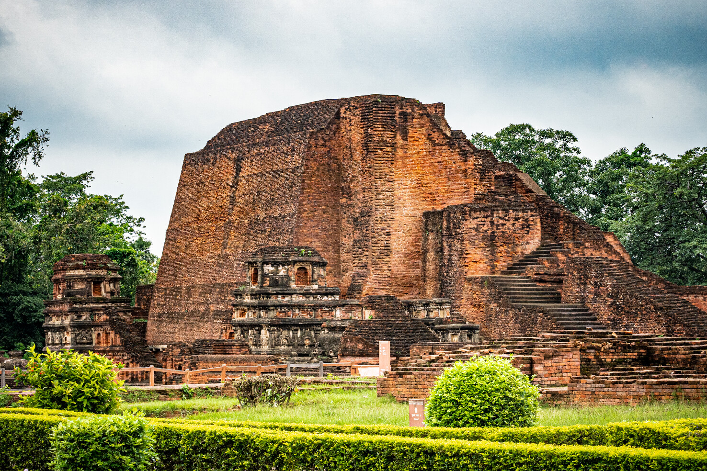
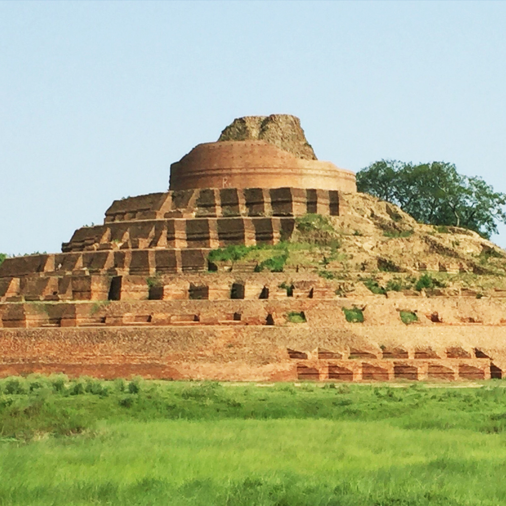
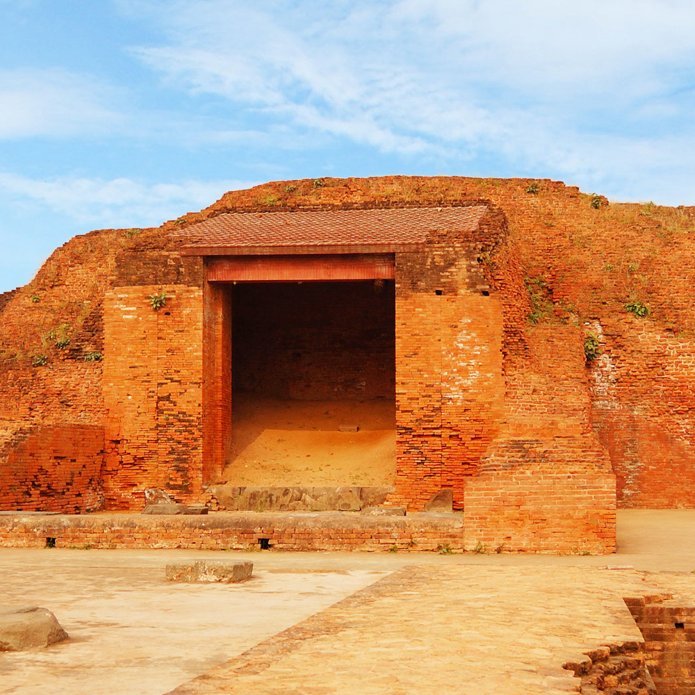

Sacred Buddhist Destinations
Sites in Bihar tied to the Buddha's life, from enlightenment at Bodh Gaya to the universities of Nalanda and Vikramshila.

Mahabodhi Temple
UNESCO World Heritage temple in Bodh Gaya, where the Buddha attained enlightenment.

Nalanda Mahavihara
UNESCO-listed ruins of the ancient monastic university in Magadha.

Kesariya Stupa
A vast terraced stupa in East Champaran on the Buddha's last journey.

Buddha Smriti Park
Patna memorial park with a central stupa and relic chamber.

Vikramshila
Pala-era Buddhist university remains near Bhagalpur.

Sujata Stupa & Bodh Gaya
Nearby Bodh Gaya sites including Sujata Stupa and the temple precincts.
Bodh Gaya
The sacred place where Lord Buddha attained enlightenment under the Bodhi tree. Home to the magnificent Mahabodhi Temple, a UNESCO World Heritage Site.
Nalanda
The ancient university that was the most renowned center of Buddhist learning. Explore the archaeological ruins of this UNESCO World Heritage Site.
Rajgir
The ancient capital of Magadha where Buddha spent many years. Visit Gridhakuta (Vulture's Peak) where he delivered many important sermons.
Vaishali
The place where Buddha preached his last sermon. Home to the Ashokan Pillar and the ancient Buddhist stupas and monasteries.
Kesariya
A vast terraced stupa in East Champaran, linked to the Buddha's last journey and the Licchavis of Vaishali.
Vikramshila
The ruins of another ancient Buddhist university located in Bhagalpur. An important center of Tantric Buddhism in ancient times.